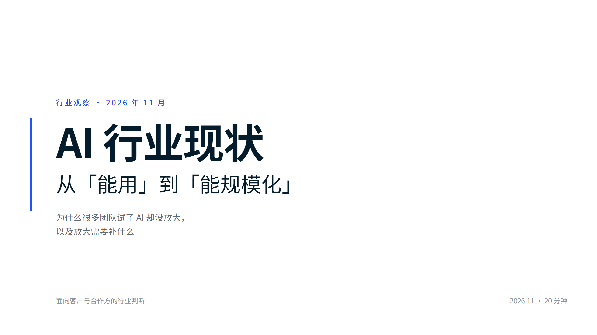
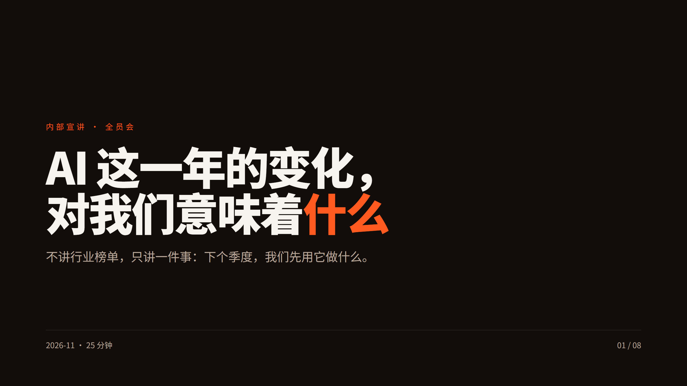

同一主题，两种受众
同一份行业事实，讲给客户和讲给同事，结构完全不同
对外 · 客户提案14 页 · 咨询版式 · 白底

| 要他们 | 认可我们的判断，不需要当场拍板 |
| 靠什么 | 每条结论都带出处，判断与统计分开标 |
| 语气 | 克制、留白，先给证据再给建议 |
| 收尾 | "现在不适合做的三件事" |
对内 · 全员宣讲8 页 · 深色大字报 · 橙调

| 要他们 | 报名参与 90 天试点 |
| 靠什么 | 只留三条硬事实，其余全换成"关我什么事" |
| 语气 | 直接、动员，句子短，音量高 |
| 收尾 | "三个人，一个场景，九十天" |

周会同步
5 页 · 深色极简
5 页 · 深色极简

内部培训
6 页 · 4:3 米色教学
6 页 · 4:3 米色教学
同一套流程，换场合就换版式：
小事填表 5 页，培训 4:3 便打印。
小事填表 5 页，培训 4:3 便打印。